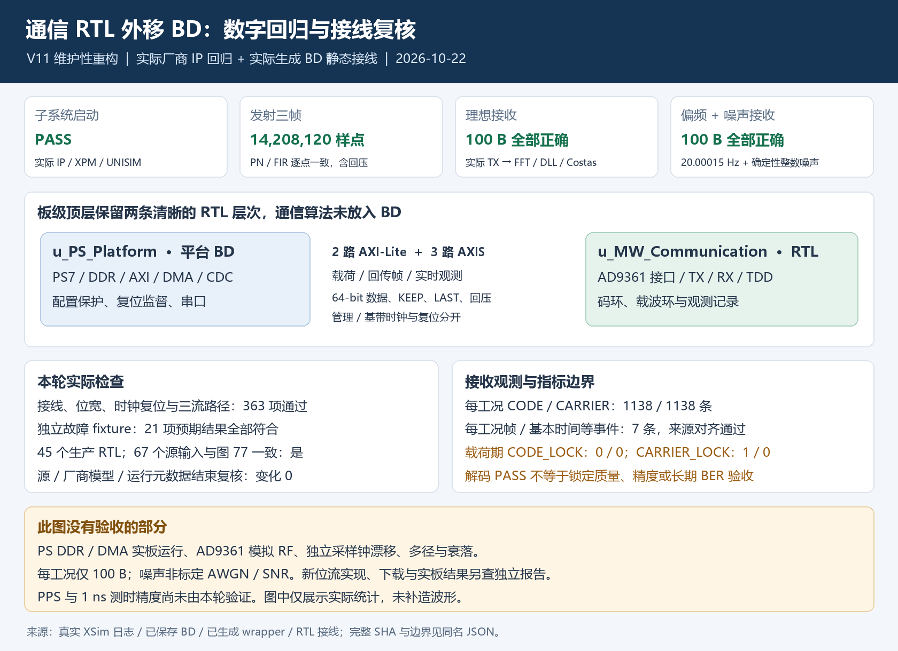

通信RTL外移BD的四项实际厂商IP数字回归保持原结果：TX三帧14,208,120样点逐点一致，理想及约20Hz载波偏差+确定性整数噪声两工况各100B正确。363项实际结构检查通过；原21项fixture仍是检查器敏感性证据。当前另已形成内部合格台架候选，见实现更新；数字回归、源码结构、原生实现和硬件连接诊断分开记载，不代表PS/RF/1ns验收。PNG保持原字节，未重跑或补造波形。
实现更新（2026-10-22）：I4已完成原生实现（返回0）和官方FMSH -disable_icap处理，内部台架候选资格40/40通过，独立核对raw/final及15项产物哈希。WNS +0.957ns、WHS +0.051ns，setup/hold/pulse失败端点均0；105,500条可布线网全部route。原生修复前后4份序列化XDC逐字节一致。DRC为0 Error、4 Critical Warning、248 Warning、16 Advisory；4项严重告警属于BUFH→BUFGCTRL，未隐藏或降级。DATA_CLK非专用时钟脚及外部I/O预算仍未签核；WNS/WHS是静态时序裕量，不是测时误差或1ns精度。
下载与GUI状态：A配置请求因No devices detected在PROGRAM_BEGIN前停止，B未开始下载；空闲时重启server后，两个JTAG目标仍均未枚举到芯片。因此本轮没有配置成功、Flash写入、PS初始化或RF使能，也无PS/RF/1ns新验收。实际Vivado GUI已打开并确认两条direct-sibling层次和Core下9个子模块，GUI后资格复核仍为40/40。内部合格候选不等于实板通信通过。CODE_LOCK 0/0、CARRIER_LOCK 1/0的原数字回归限制保持不变。
历史I/O修正：旧网表曾多插16个IBUF和16个OBUF并产生32项I/O DRC错误；BoardTop的12个LVDS声明（32物理位）增加IO_BUFFER_TYPE=NONE。新I4最终网表已确认单层pad结构，包含5个IBUF、11个OBUF、8个IBUFDS和8个OBUFDS；363项结构与130项源码契约检查仍保留原证据。该关闭结论仅限实现网表，不代替物理接口眼图或外部I/O时序。

私有源码、IP、位流、硬件序号、绝对路径和原始大日志未随图册发布。